4.4 多因素试验
多因素试验是指在同一试验中，影响目标值的因素有 2 个或 2 个以上，且这些因素的作用都在试验考察的范围内。例如在一个农业试验中，我们同时要考察种子品种和肥料施放量这两个因素对亩产量（目标值）的作用。在食品生产中可加入 2 种或更多的添加剂，其用量是考察的对象。在工业试验中同时考察温度、压力、反应时间等因素对产品质量的影响。有时，我们关注的是一个因素，但由于我们希望关于这个因素的结论能建立在更宽广的基础上，以及其他种种可能的原因，在试验的安排上还得有其他因素的参与。例如在一个农业试验中，我们关心的可能只在于比较几个种子品种，因此可以作为一个单因素试验去安排。但如果这样做，就必须在试验中把其他因素固定，例如说播种量、用什么肥料、用多少，都得固定下来，对各品种一视同仁。不然的话，这些因素的作用就会与我们关心的对象——种子品种的作用混杂起来，而达不到试验的目的。但如把这些因素都固定起来，我们试验的基础就太窄了。比如说，我们把播种量等因素都固定在某个值去做试验，经过对数据的分析，证明品种  在几个品种中最好。但这个结论在其他情况（即把播种量等因素固定在另外的值）下是否仍成立呢？不知道。因此，可以而且应当考虑把播种量等因素纳入试验的安排之中。这样不仅使我们主要关心的因素——品种的结论建立在更宽广的基础上，而且也可以附带考察其他因素（播种量等）的作用，以及所有参与试验的各因素之间的联系作用，这种作用在统计学上称为“交互作用”或“交互效应”。例如，某一品种要求的施肥量较大而另一品种则要求小一些。一般，两个因素之间的交互作用，是指其中一个因素发挥的作用大小，受到另一个因素的影响和制约。在日常生活中这种例子也很常见。例如，菠菜和豆腐分开吃营养价值都高，但煮在一起则不利。只考虑一个因素的试验对这种交互作用无法进行考虑。另外，多因素试验还有节省试验次数的作用，下面会解释这一点。
在几个品种中最好。但这个结论在其他情况（即把播种量等因素固定在另外的值）下是否仍成立呢？不知道。因此，可以而且应当考虑把播种量等因素纳入试验的安排之中。这样不仅使我们主要关心的因素——品种的结论建立在更宽广的基础上，而且也可以附带考察其他因素（播种量等）的作用，以及所有参与试验的各因素之间的联系作用，这种作用在统计学上称为“交互作用”或“交互效应”。例如，某一品种要求的施肥量较大而另一品种则要求小一些。一般，两个因素之间的交互作用，是指其中一个因素发挥的作用大小，受到另一个因素的影响和制约。在日常生活中这种例子也很常见。例如，菠菜和豆腐分开吃营养价值都高，但煮在一起则不利。只考虑一个因素的试验对这种交互作用无法进行考虑。另外，多因素试验还有节省试验次数的作用，下面会解释这一点。
多因素试验又称复合试验，它是现代统计学的主要奠基者费歇尔（他的名字在前面多次提及）在 20 世纪 20 年代提出的。在他以前，农业田间试验中风行的是单因素试验，即使有几个因素需要考虑，也是分开一个一个做。费歇尔对这种做法进行了批评而倡导使用复合试验。1926 年他说了一段话，集中表现了他的思想：
“有一种观点在田间试验中反复流传。这种观点认为，我们每次向大自然探问的问题数目愈少愈好，理想的就是每次只问一个问题。作者（费歇尔自称）确信这种观点完全错误。我认为，大自然只会对那种经过深思熟虑且合乎逻辑的问题做出反应。如果我们只问她（指大自然）单一的问题，她会拒绝做出回答……”（括号内的话是译者添加的）。
当时费歇尔正在英国的一个农业试验站任职，在那里他领导了一些复合田间试验的工作。后来，这种设计思想被引进到工业界及其他领域，并在方法上有许多重要的发展。
为了说明复合试验的好处，下面考察一个最简单的例子。设有两个种子品种 和  ，两个播种量
，两个播种量  和
和  ，按复合试验，有下面 4 个组合要做试验。
，按复合试验，有下面 4 个组合要做试验。
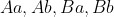
（7）例如，
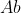
是指用品种 ，播种量 。每一个可能的组合，例如 ，称为一个“处理”。本试验共有 2 个因素，每个因素各有 2 个水平，处理总数是所有可能的组合数，即处理总数 = 各因素的水平数的乘积，
在本例中为 2×2=4。经过种植试验，得（7）中 4 个处理的亩产量，依次记为
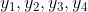
。利用这些数据可以进行以下一些分析比较。
- 比较品种 、 的优劣。这可以用 、 的平均数之差
 ，它之所以可用，是因为在和
，它之所以可用，是因为在和 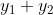
中，、各出现一次，和 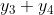
中也一样。所以，不论是 还是 ，都不会因为播种量这个因素而取得优势或处在不利的地位。 - 比较播种量 、 的优劣。可以用 、 的平均数
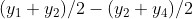
。此量不受另一因素——品种的影响，道理与上述相同。 考察品种与播种量这两个因素之间有无交互效应。先看在播种量 之下，品种 、 产量的差异
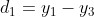
，再看在播种量 之下，品种 、 产量的差异
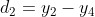
。若
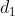
，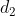
接近，则表明 、 之间的差异，或者说 、 谁优谁劣，不受播种量的影响，这时交互效应不存在或不显著。反之，若 ， 有较大的差距，则表明 、 之间的对比情况，受到播种量的显著影响。这不仅是数量上的，还可以是方向上的，例如 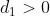
而 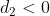
，表示使用播种量 时， 优于 ，而在使用播种量 时则 优于 。这时，品种与播种量的交互效应显著，使用平均数之差 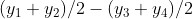
来比较 、 就不那么有说服力。选优。试验的目的可能是要在（7）中的 4 个条件中选择一个最优者，以备用于生产实际。为此可在 中挑一个最大者，例如为
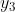
，则选择 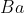
这个组合。
由此看出，在复合试验的安排下，虽只做了不多的 4 次试验，已能使我们从中分析出许多情况 1。假如采用一个一个做的方法，例如固定播种量为 而比较品种 、，并使每个平均值至少由 2 个数据算出（如前面的 ），则也得做 4 次试验。而这样做的 4 次试验所能给我们的东西，比前述复合试验要少：它不能对播种量这个因素的作用，以及两个因素之间是否有交互效应，做出任何判断。
1这里只是从数据的表面看问题，未计及随机误差的影响，严格的统计分析需要考虑到这种影响。为此目的，试验要有重复。如（7）中每个处理重复做 2 次试验，则一共需要做 8 次。如果在事先能排除交互效应存在的可能，则不设重复也可以。
复合试验在理念上看相当简单，但直到 1926 年才由费歇尔发明，且在开始时还受到不少质疑。这种现象现在看来似乎有点儿难以理解。其实在科学史（包括数学史）上，这种情况不少：一个新思想在提出之前，很久无人想到；一旦有人提出，人们又觉得很简单甚至理所当然。例如，传说中牛顿因见到苹果落地而发现万有引力。在牛顿之前，这一现象被无数人看到过，但无人想到它有何意义，等到牛顿一提出来，大家又觉得理所当然：没有力的牵引苹果何能掉下来？这说明创新思想之不易，而科学贵在创新，创新往往就在人们不注意的地方生出。胡适有一句话：做学问要在不疑处有疑。不过，创新既靠常识的积累，也是一种素质和精神。对科学家而言，实现创新也无一定之规，有灵感的作用，多少带一些“可遇不可求”的性质。
下面介绍一些多因素试验方法。
部分实施假定有一个试验包含 3 个因素，其水平数依次为 3，5，4，则称之为一个 3×5×4 的试验。它一共包含 3×5×4=60 个处理——前面曾指出：所谓处理，就是各因素的一个水平组合。在设计上和统计分析上讲，各因素有同样数目的水平的情况较为简单。例如  个因素各有 2 个水平，简记为
个因素各有 2 个水平，简记为
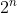
型试验，是用得最多的。类似有 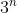
型试验、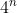
型试验，等等。如果一个试验把全部所有可能的处理都做了，则称为“全面实施”。如上面的 3×5×4 试验，做全面实施，有 60 个处理要做。一个
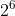
型的试验，全面实施有 64 个处理要做。在不少情况下，做一次试验很昂贵，做全面实施有困难，有时也无此必要，特别是在误差影响不大的情况下。因此产生了“部分实施”的概念，即只在全部处理中挑选其一部分实地做试验，其余的就不做。如挑选全部处理的一半，叫 1/2 实施，类似地有 1/3 实施、1/4 实施，等等。问题在于这一部分该如何挑，这是复合试验设计的主要问题所在。挑得不好，得出的数据无法用于统计分析。
例如，考虑一个包含 3 个因素的农业试验：种子品种有 2 个，编号为 1、2，肥料有 2 种，播种量有 2 个，也都分别编号为 1、2。这是一个 23 试验，全部处理有 8 个。
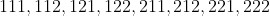
例如，处理 121 表示用第 1 个品种、第 2 种肥料和第 1 个播种量。假定我们打算做其 1/2 实施，而挑选实际进行试验的 4 个处理为
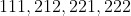
其试验结果（以每亩产量计）分别为 。
在这个设计下，两个品种的优劣无法比较，因为含品种 1 的试验结果只有一个，而其余 3 个含品种 2 的试验结果
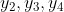
都不能与  比较。例如，若拿 与
比较。例如，若拿 与  做比较得
做比较得 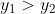
，则既可能是品种 1 优于品种 2，也可能是播种量 1 优于播种量 2。如拿 与 或与 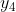
比较，也有类似的问题。但若我们改用如下的 1/2 部分实施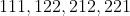
则情况改观。仍以 分别记这 4 个处理的试验结果。为比较品种 1、2，可考察
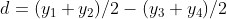
不论在 还是 中，都是两种肥料各出现一次，两种播种量各出现一次。因此， 这个值中不含因为肥料和播种量的不同而带来的差异，它只反映两个品种之间的差异。若要比较肥料 1、2，可以用差
这个值中不含因为肥料和播种量的不同而带来的差异，它只反映两个品种之间的差异。若要比较肥料 1、2，可以用差
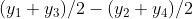
；若要比较播种量 1、2，可以用差 。读者不难验证，它们都消除了被比较因素以外的其他各因素的影响。问题是怎样去构造具有后一例这种优点的部分实施。
这就是统计学的分支——试验设计所要讨论的重要问题。下面将指出 2 种常用的方法。要指出的是：（1）并非在任何情况下都可以做出这样的部分实施；（2）做部分实施，试验次数是减少了，但并非没有代价。代价之一是因数据少而导致的估计精度的下降。在试验精度很高时这一点问题不大。如试验精度不高（受随机误差影响较大）、试验的费用并不太昂贵且总的试验次数不太大时，就不必使用部分实施。代价之二是，如果参与试验的各因素之间存在交互效应，则在做部分实施时，有些（不一定是全部）交互效应将无法估计。哪些能估计，哪些不能估计，与所选择的具体的部分实施有关。因此，如探讨交互效应是试验的主要目的，则部分实施或者不可行，或者其实施率不能太低。
拉丁方和正交拉丁方 前面在讨论单因素试验时已介绍过拉丁方，现在来讲讲它如何用于复合试验的部分实施。
考虑下面的例子。在一工业试验中涉及 、、 3 个因素，各有 3 个水平。这是一个 33 型的试验，做全面试验需做 27 次。如果我们只打算做其 1/3 实施（显然，1/2、1/4……实施都不可能），该怎么办？3 阶拉丁方提供了一个解法。
3 个因素，各有 3 个水平。这是一个 33 型的试验，做全面试验需做 27 次。如果我们只打算做其 1/3 实施（显然，1/2、1/4……实施都不可能），该怎么办？3 阶拉丁方提供了一个解法。
选择一个 3 阶拉丁方，如：
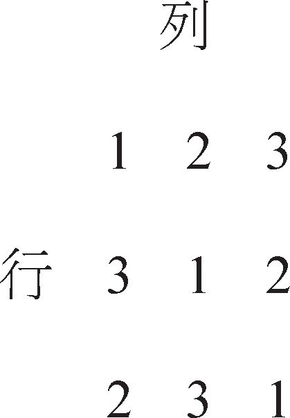
把行作为因素 的水平，列作为因素 的水平，方阵中的数字作为因素 的水平，照“行、列、数字”的次序列出方阵中各位置的所属，得：
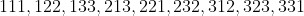
。 （8）例如，方阵中第 2 行第 3 列位置上的数字是 2，故有 232，这在上面序列中排在第 6 位。排列的次序是从第一行起由左至右，然后自第 2 行起，等等。
这 9 个处理构成全部试验（需 27 次）的 1/3 实施，但利用其结果，仍能对每一因素的各个水平进行比较。分别以
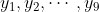
记上述 9 个处理的试验结果。为比较因素 的 3 个水平的表现，计算 3 个平均值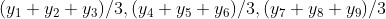
在这 3 个平均值中，因素 、 的 3 个水平各出现 1 次且只出现 1 次，它们的作用相互抵消了，故这 3 个平均值之间的差异，就只与因素 的 3 个水平的优劣有关——当然，还有随机误差的影响。若想比较因素 的 3 个水平的表现，则用以下 3 个平均值
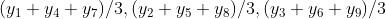
而对因素 则用以下 3 个平均值
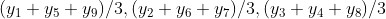
它们都排除了被比较因素外的各因素的影响。所以能做到这一点，是因为有拉丁方的性质：各行各列含数字 1、2、3 各一次。
如果是 3 个因素各有 4 个水平（共
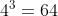
个处理），则用 4 阶拉丁方可以做其 1/4 实施，包含 16 个处理，做法与上述相似。只要是 3 个因素，且各因素的水平同一（同为 ），则可用 阶拉丁方做其  实施。
实施。单个拉丁方只能对付 3 个因素的试验，如果试验中要考虑的因素多于 3 个，该怎么办？这时要运用多于 1 个的拉丁方，且这些拉丁方要满足一定的条件。考虑如下的例子。设试验中有 4 个因素，各有 3 个水平，全面实施要做
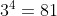
次试验。现在想做其 1/9 实施，取两个 3 阶拉丁方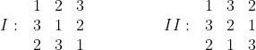
它有如下的特点：在一个方中同一数字所占位置处，在另一方中的数字各不同（因而各出现一次）。例如方
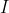
中 2 所占的位置，在方 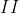
中分别由 3、1、2 所占据；在方 中 3 所占的位置，在方 中则分别由 2、3、1 所占据。两个同阶拉丁方如具有这样的性质，则称为正交拉丁方。利用这两个正交拉丁方，就可以做出所要的 1/9 实施。
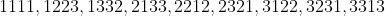
其方法与做序列（8）—样，只是在（8）的每个处理的第 4 位，添上方 中相应行、列处的数字。由于所用的拉丁方有正交性，用上例一样的理由不难验证，由此 9 个处理的试验结果，可以对 4 因素 、、、 的每一个的各水平做比较。
的每一个的各水平做比较。
提起正交拉丁方，还有一个数学史上有名的故事。18 世纪有一位可列入有史以来最伟大的数学家之一的欧拉，提出了一个所谓“36 军官问题”。设有 36 个军官，来自 6 个军，每个军出 6 人。又其中有上校、中校、少校、上尉、中尉、少尉各 6 人，现在要将这 36 个军官排成一个 6×6 的方阵，使每行（列）的 6 个人中，来自每个军的各 1 人，且 6 个军衔各有 1 人。
很容易看出，这个问题与寻找两个正交的 6 阶拉丁方是一回事。首先，若有了两个正交的 6 阶拉丁方 、。先把 方中数字 1 的那 6 个位置标出来，让来自第一军的那 6 个军官占据。至于这 6 个人分在这 6 个位置中的何处，则根据 方，因为，既然 、正交，则 方中标 1 的那 6 个位置，在 方中则 1, 2,…, 6 各有一个。让这 6 个人中的上校站在 方 1 处的位置，中校站在 方 2处的位置，等等，直到少尉站在 方 6 处的位置。对来自第二、第三等各军的 6 个军官，也照此办理（第二军的 6 人占据 方数字 2 的 6 个位置，等等）。不难看出，这个排法符合欧拉问题中的要求。反过来也容易看出：如果欧拉的问题有一种解法，则根据这个解法就可以排出 2 个正交的 6 阶拉丁方。读者可以想想该如何去做。
欧拉毕生解决了许多数学难题，可是对这个“36 军官问题”，虽经过许多努力，却始终没有找到一种解法，于是他开始怀疑这个问题是否有解。但要证明它无解，也非易事。直到 1900 年，才有人证明了欧拉 36 军官问题确实无解，即不存在两个正交的 6 阶拉丁方。
可能是一种巧合，欧拉恰好遇上了 6 这个数，若是 3×3, 4×4, 5×5，或一般
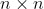
个军官的问题，只要 不是 2 或 6（ 为 2 时显然无解），则问题一定有解。就是说，只要 不为 2 或 6，必存在两个正交的 阶拉丁方，这一点与欧拉当初猜测的不合。他曾猜测：当 为所谓“半偶数”——不能被 4 整除的偶数，即 2, 6, 10, 14, 18,…——时， 阶正交拉丁方不存在。由于欧拉在数学界的名气，正交拉丁方的问题引起一些数学家的兴趣，得出了不少结论，例如，
1）除
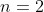
和 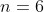
外，对其他的正整数 ，必存在至少 2 个正交的 阶拉丁方。又对任何 ，相互正交的 阶拉丁方至多只能有  个。
个。2）当 为素数的幂，即
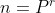
， 为素数而
为素数而  为正整数时，必存在 个相互正交的 阶拉丁方（若干个同阶拉丁方称为“相互正交”，其中任意两个拉丁方都正交）。
为正整数时，必存在 个相互正交的 阶拉丁方（若干个同阶拉丁方称为“相互正交”，其中任意两个拉丁方都正交）。所谓素数，指的是那种大于 1 的正整数，它除了 1 和本身外，不能为任何其他正整数所整除。例如，2, 3, 5, 7, 11, 13, 17, 19, 23 等都是素数。6 不是素数，因为它能被 2 和 3 整除。
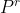
的意思是 个连乘，如 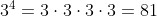
。作为例子，考虑
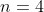
，它是素数 2 的平方。按上述结论 2），应存在 3 个相互正交的 4 阶拉丁方，数学家确实把它们做出来了，读者不难验证，以下 3 个 4 阶拉丁方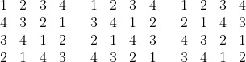
确是两两正交的。
除上述两条以外，对其余的情况知道得还不多。数学家努力的目标是：对任意的正整数 ，搞清楚有多少个相互正交的 阶拉丁方，以及如何把它们构造出来。这个问题的难度，比起数学上现存的没有解决的难题，毫不逊色。其最终解决的时间在今天无法预料，不过就统计试验设计上的需要而言，目前的知识已基本够用，因为在一般情况下，因素的水平数不会超过 10。对不超过 10 的 ，据前面所述结果，2 与 6 已知不行，而对
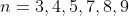
，都有 个 阶正交拉丁方存在。对 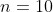
也构造出了正交拉丁方。正交表 从前面的讨论中我们可以看出一个要点：在复合试验中取部分实施，关键的问题是“保持平衡”。这指的是不让任何一个因素的任何一个水平，因与其他因素结合而得利或受害。拿一个简单的例子看。设一个农业试验包含种子品种和播种量这两个因素，各有 4 个水平。在做全面实施（共 16 次试验）时，每一个种子品种与每一个播种量结合使用一次，故在衡量各种子品种优良性的对比时，不会因为其与播种量的结合而受益或受害。但若用部分实施则不然，由于只做了一部分试验，一个种子品种只与 4 个播种量之一部分结合使用，而各播种量的效益可能不同，因此各种子品种就不能处在平等的地位去比较，这使我们无法得出有根据的结论。
如何在部分实施中保持刚才所解释的意义下的平衡，就是复合试验设计研究的一个重要内容。拉丁方和正交拉丁方是解决这个问题的工具之一，但有其局限性，局限性之一是各因素必须有同一的水平数。其次，用拉丁方及正交拉丁方做的设计，不能分析因素之间的交互作用。所以，只有在事先能肯定交互效应不存在，或不作为试验探讨的重要目的时，这种设计才能用。
下面我们要介绍另一种方法，它利用一种事先编就的、名为“正交表”的表格。先通过几个实例（表 4.1 到表 4.3）来说明什么是正交表。
表 4.1 正交表
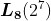
表 4.1 中，记号 中的字母 ，是正交表的符号，无特殊含义。下脚的数字 8 表示表的行数。 中的 2，表示表中每列只含 1、2 这两个数字，7 则是表的列数。
下面的表 4.2 的正交表 ，其解释完全类似。
表 4.2 正交表
此外，正交表每列所含不同数字的个数可以不同。
表 4.3 正交表
在表 4.3 中的 ，表示该表含有 2 种不同的列：一种有 4 个不同数字，只有 1 列；另一种列含 2 个不同数字，共有 4 列。8 的意义与前面解释的一样，是表的行数。
现在利用这几个表来解释“何为正交表”这个问题，就是说，讲清楚一个表要成为正交表所必须满足的条件。
1） 表的每一列中，不同数字出现的次数相同。
如在表 4.1 中，只有 1、2 两个不同数字，在表的各列中都出现了 4 次；在表 4.2 中，有 1、2、3 等 3 个不同数字，在表的每列中各出现 3 次；在表 4.3 中，第一列有 1、2、3、4 等 4 个不同数字，各出现 2 次，其余各列只含两个不同数字 1、2，各出现 4 次。
2） 表中任何一列中的同一数字占据的那些行，在其他任何一列中，该列所含的不同数字都要出现，且出现相同次数。
如在表 4.3 中，第 1 列的数字 3 出现在第 5、6 行，而在第 2列中，这两行的位置出现数字 1、2 各 1 次，其他 3、4、5 各列亦然。又如在表 4.3 的第 3 列中，2 占据第 2、4、5、7 这几行，而在第 5 列中，这 4 行的位置出现数字 1、2 各 2 次，在该表的第 1 列，这 4 行的位置则 1、2、3、4 各出现 1 次。
讲清楚了正交表是怎么一回事，现在可以来讨论我们的主要问题了：如何利用正交表来做部分实施的试验设计。有以下几个步骤。
（1）明确试验中涉及多少因素，各有多少水平。
（2）确定打算做的试验次数。
（3）根据前两项选用适当的正交表，并做“表头设计”。
（4）从表头设计确定要拿哪些处理做试验，这就是所确定的试验方案，“处理”一词前面已有解释，它是指每个因素各出一个水平的组合。
前两条的意义明显，重点是解释第 3 条，我们仍通过具体例子来做。
设一个试验中包含 4 个因素 、、、，各有 2 个水平。按以前介绍过的记号，这是一个 型试验，全面实施要做 16 次试验。现只打算做 8 次，即其 1/2 实施。我们把每个因素的 2 个水平都编号为 1、2。这样，此试验的一个处理就是 4 个数字依次排列。例如，1221 表示第 1 因素和第 4 因素用水平 1，而第 2 因素、第 3 因素用水平 2。现在的问题是，要把打算做试验的那 8 个处理找出来。
选用正交表 。选用此表的理由，一是表的行数 8 与拟做试验的次数相同，二是此表各列都只含数字 1、2，与各因素的水平 1、2 一致。
选定正交表后，把 4 个因素 、、、 分别安置在表的 4 个列的头上，如表 4.4 是一种可能的选择。
然后对每一行，按 、、、 所在列的次序，列出各列的数字，即成一个处理，这样共得 8 个处理。
（9）
这些从全部 16 个可能的处理中排出的 8 个，即构成这个 试验的一个 1/2 实施设计。
表 4.4 加入、、、 的正交表
的正交表
这个安排实现了“保持平衡”的要求。事实上，如以 依次记上述 8 个处理成这样的试验结果（目标值，例如农业试验中的亩产），则为比较因素 的两个水平的优劣，可算出在 的水平 1 之下 4 个试验结果的平均 ，与 的水平 2 之下 4 个试验结果的平均 ，再比较这两个平均值。由正交表的性质 2 可以知道，在计算上述两个平均值时，其他各因素起着同等的作用：例如，在 中， 的水平 1、2 分别在 和 中出现，各 2 次； 的两个水平 1、2 也如此，而 的水平 1 在 ， 中出现，水平 2 在 和 中出现，也是各 2 次。 的情况也一样。因此，这两个平均值的差异只体现了 的两个水平的优劣对比。如果考察别的因素的两个水平的比较，情况也一样。
假如试验中有 5 个因素 、、、、 ，全面实施有 次试验，但要求只做其 1/4 实施，即 8 次试验，则仍可用 正交表，只要把因素 放在表的第 5 列的头上就可以，所得的 8 个处理为
，全面实施有 次试验，但要求只做其 1/4 实施，即 8 次试验，则仍可用 正交表，只要把因素 放在表的第 5 列的头上就可以，所得的 8 个处理为
读者不难验证，对这个 1/4 实施的设计，仍有保持平衡的性质。再推下去，若还有第 6 个因素 ，（ 及以下提到的 、，都只有 2 个水平）而要做 1/8 实施，或还有第 6、7 两个因素 、，要做 1/16 实施，这个表仍可以用，只要把因素 、 分别放在表的第 6、7 列的头上就行。这已达到了用这个表的极限：若再有一个因素 ，则这表上已排不下。2
2用高深的数学方法可以证明：若试验中包含 8 个或更多的因素而限定只能做 8 次试验，则不可能找到一种设计，它能对所有的因素保持上述意义下的平衡。
通过这个例子，我们对正交表的参数在试验设计中的作用做了解释。行数表示（用此表做设计时，下同）拟做的试验次数；列数表示所能容纳的因素最大的个数；表中的数字表示因素的水平：如把某个因素，例如 ，放在表中某列的头上，则该列中所含不同数字的个数，必须与因素 的水平数相同。因此，若使用表 做试验设计，则：（1）要做 9 次试验；（2）至多只能有 4 个因素；（3）每个因素的水平数必须都为 3。当这些条件都满足时，表头设计的方法与上例一样。例如有 3 个 3 水平因素 、、，全面实施有 次试验，现做其 1/3 部分实施，有 9 次，可以把 、、 依次放在表 的前 3 列的头上，再按行依次读出如下 9 个处理。
如果利用 表设计试验，则试验中的 4 水平因素至多只能有 1 个，如果有，这个因素必须排在第 1 列，因只有这一列含有 4 个不同的数字；试验中 2 水平因素最多只能有 4 个，它们可安排在余下几列的头上。
我们前面多次提到“表头设计”，它指的是如何把各因素安排在表中各列的头上。在做这件事时我们只提了一个限制，即如把某个因素 放在某列的头上，则该列所含不同数字的个数，必须与 的水平数一致，此外就可以任意灵活安排。如果只讲到这一点，会以为“表头设计”是一件轻而易举的事，其实不尽然。
关键在于因素间的交互作用——我们前已解释过，所谓两个因素 、 之间有交互作用，指的是 、 中的任一个，例如 ，其各水平的优劣比较，取决于 处在哪一水平上。前几个例在谈到用正交表设计能保持平衡时，我们附加了一个没有言明的条件，即不涉及交互作用的问题，如涉及特定的交互作用，则在做表头设计时需要小心。仔细的论述涉及较高深的内容，我们只通过一个例子来说明这一点。
考虑前面讨论过的 试验：4 个因素 、、 和 ，各有 2 水平，做 1/2 实施，共 8 次试验。用正交表 设计，前面我们说过，可以把 、、、 放在表中任意 4 列的头上，此前我们选择的是前 4 列，所得的 8 个处理为（9），我们也可以选择把 、、、 分别排在第 1、2、4、5 列，所得的 8 个处理将为
。 （10）
当然，这个 1/2 实施也保留了每一因素 2 个水平之间比较时，其他各因素的作用保持平衡的特性——这是由正交表的两条基本性质带来的结果，与列如何选择无关。
但是，如果我们试验的目的还包括搞清楚某些因素之间，例如 、 之间，是否有交互作用，则两个设计（9）和（10）不一样：（9）不能达到这个目的，而（10）可以，下面来解释这一点。
设采用设计（9），为考察 、 之间有无交互作用，要计算两个量：
在 的水平 1 之下， 的两个水平试验平均值的差，
在 的水平 2 之下， 的两个水平试验平均值的差，
先算 。 处在水平 1 的试验结果有 4 个，即 ，其中 是 处在水平 1，而 是 处在水平 2，故 应由
（11）
来计算，可是从（9）不难看出：在 和 中，因素 处在水平 1，而在 和 中，因素 处在水平 2，故 所反映的东西还包括了 的两个水平的差异，不全是我们所需要的，这样，比较就失去了基础，对 也可以看出有同样的问题。这表明：在设计（9）（它是由分别把因素 、、、 放在表的前 4 列而得到的）之下，、 之间的交互作用，如果存在的话，没法通过试验结果分析出来。
现在我们来看看，若采用设计（10），情况会如何。在这个设计下， 处在水平 1 的试验结果有 4 个，也是 ，因此 仍由公式（11）计算。但这时在 以及 中，都是 的两个水平各出现 1 次， 的两个水平也各出现 1 次。这样一来， 只反映了在 的水平 1 之下， 的两个水平的优劣比较，而与 、 无关。
类似地算出在 处在水平 2 之下， 的两个水平的试验平均值之差为
，
不难看出， 也是反映了在 处在水平 2 之下， 的两个水平的优劣比较，而与 、 无关。这样，为考察 、 之间的交互存在，只需比较 和 ，若二者差别大，则判定 、 之间的交互作用显著，否则就不显著。这里得有个界限，而这个界限，是考虑到试验结果中有随机误差的影响，经过适当的统计分析方法而定出的。
最后，细心的读者必然会产生一些问题。例如，怎么知道，为考察 、 的交互作用，设计（9）不行而（10）就行？还有，很可能需要考察的交互作用还不止于 、 之间。理论上一共可以有 6 个交互作用： 与 、 与 、 与 、 与 、 与 和 与 。在一个具体的试验中，我们可能只要求考察这 6 个交互作用的一部分，如做 8 次试验，即用 表，最多能考察几个？如具体给出了需要考察的交互作用，例如， 与 及 与 ，如何去做出相应的表头设计？
第一个问题易回答（但要讲清道理就不易）：能考察的交互作用的个数，等于表的列数减去试验中包含的因素的个数。如在本例中，用 表，共 7 列，若试验中包含 4 个因素，则能考察的交互作用个数为 7 - 4 = 3，这可以是以上列举的 6 个交互作用中的任意 3 个。如果有 5 个因素，则只能考察 2 个交互作用，等等。可以问：若有 5 个因素，而试验的目的中包含了必须考察 4 个交互作用，那怎么办？答案是必须增加试验次数，用 正交表。用此表需要做 16 次试验，但表有 15 列，因素有 5 个，15-5=10，这个表可考察 10 个交互作用。这就是说，若用 表做 16 次试验，则一切交互作用都可以考察，16 次试验相当于 25 试验的 1/ 实施。这表明部分实施不一定非要牺牲某些交互作用不可。
第二个问题的回答就涉及较多的数学，此处不能细谈了。我们只指出，对 型试验（ 个因素，各 2 水平）而言，此问题已有圆满的解决。统计学家根据研究出的结果制成了表，叫“交互作用表”。每一个 型正交表都有一个配套的交互作用表，根据这个表，使用者就可以适当地安排表头，使得根据试验结果，可以考察那些事先指定要考察的交互作用。
除 型试验外，另一个有了完善解决的情况是 型试验。更复杂的情况，尤其是各列包含的数字不一的情况，问题就比较麻烦。而且，也不是每一个正交表必定有相应的交互作用表存在，这种表只能用在不考虑交互效应的试验的设计中。关于正交表的构造问题，现在仍是数学家和统计学家研究的一个热门课题。